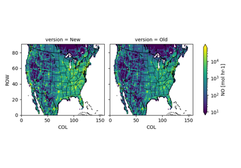

Gridded Emission Examples¶
There are currently two gridded emission examples:
Scale gridded emissions across the whole domain.
Scale gridded emissions in a specific region.
Caveat: The “specific region” can be modified to be very specific, but has limits. The examples work from emissions that have already been gridded, speciated, and often merged across many “sectors.” When trying to make very specific updates (e.g, a single SCC), sometimes this approach will fall short.

Domain-wide Gridded Emission Scaling
Domain-wide Gridded Emission Scaling